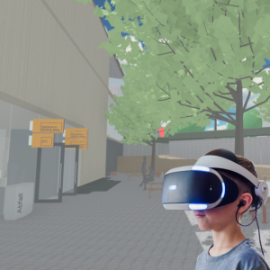
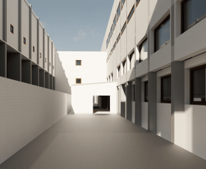

Proyectos
Este Portfolio es un recorrido de mis últimos años como estudiante de Grado en la Escuela Técnica Superior de Arquitectura ETSAV UPC y Bauhaus Universität y una recopilación de aquellos proyectos que me formaron y me ayudaron a determinar mi camino.


TFG: Análisis Espacial de la universidad ETSAV